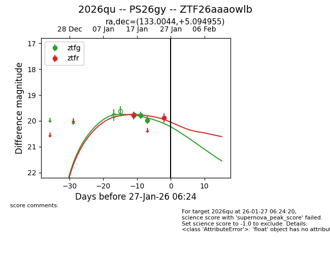
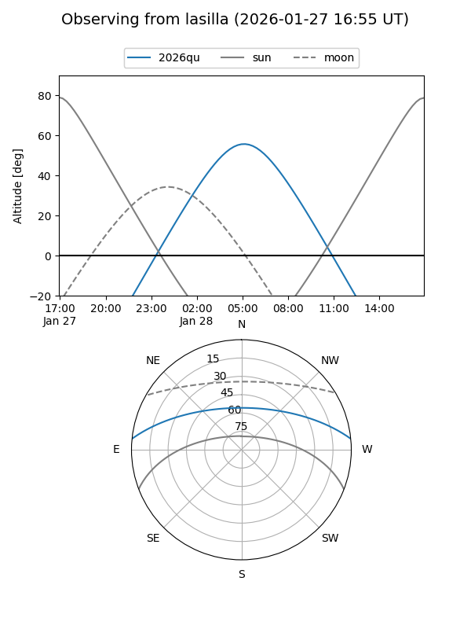
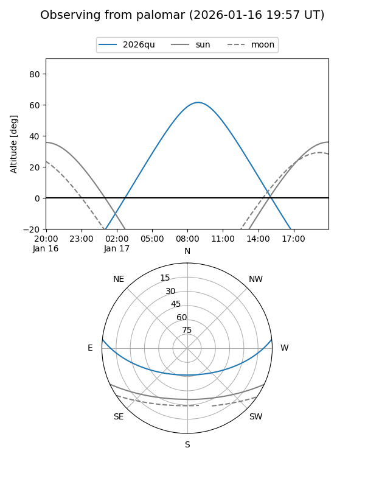
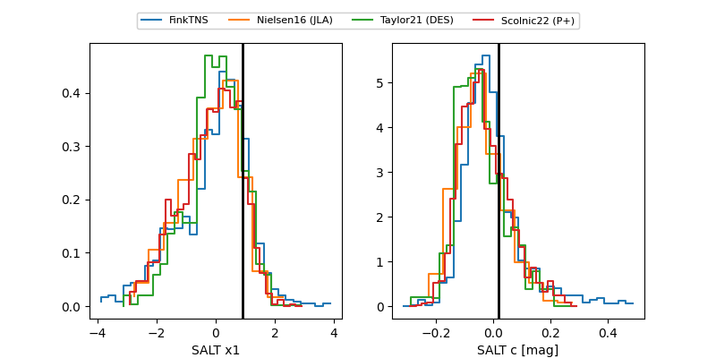

2026qu
Target 2026qu at 2026-01-19 05:05
Aliases and brokers:
FINK: link
Lasair: link
ALeRCE: link
TNS: link
YSE: link
alt names
ZTF26aaaowlb (ztf,fink_ztf)
2026qu (tns,yse)
PS26gy (panstarrs)
Coordinates:
equatorial (ra, dec) = 133.0044,+5.09496
equatorial (HMS+DMS) = 08:52:01.05,+05:05:41.84
galactic (l, b) = (222.7493,+29.05641)
Flags:
Photometry:
last ztfg=19.78, ztfr=19.79
2 ztfg, 1 ztfr detections
Lightcurve

Visibility


Additional plots
